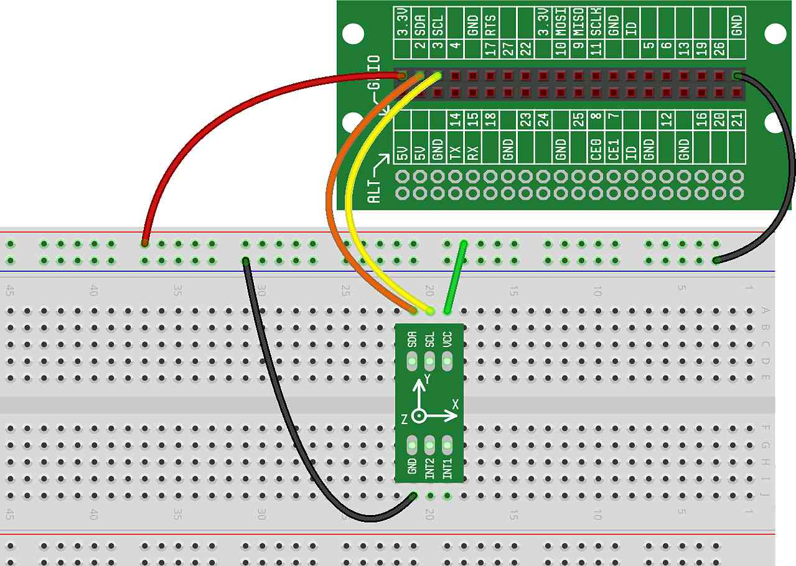

In this project, we start building an accelerometer application that will record each time the CREATOR Kit is tapped. As you'll see in future projects, this will open the door for some interesting games and devices.
In previously projects, we've mostly been using the accelerometer to measure tilt — which is one function of the accelerometer. But, what the accelerometer really does is measure forces in 3 directions. When you knock on the top of the lid of the CREATOR Kit, the accelerometer feels the force of your knock by sensing the up/down movement and vibration of the kit resulting from the knock. In fact, because it's so sensitive, even a relatively gentle knock will provide enough force to be measured by the accelerometer.
For this and the following projects, we'll only need the accelerometer wired up and the speaker attached. Here is what your breadboard should look like:
To register a knock with the accelerometer, the force we'll be trying to measure is an up and down motion — that is, a change in the Z axis force. In this first project, we'll start simple and record this force to see when it goes over some threshold that we define.
When the accelerometer sits in the breadboard, even though it may look like it is sitting perfectly flat, it is likely that it is off by a few degrees. So, before we can do a good job of measuring the up-and-down force on the Z axis, we'll need to calibrate the sensor. Calibrating the sensor means to figure out how far off from flat the sensor is really sitting, so that we'll be able to adjust our calculations later given this information.
Here is our first set of code that calibrates the sensor, and then records a few seconds of user taps.
Now, let's take a look at what our code is doing in more detail:
On Lines 8 through 14, we calibrate the sensor. In a for
loop, we sum the Z force on the accelerometer that we read
SAMPLES times. After the for loop, we divide the
sum by the number of SAMPLES. This gives us the average value
of the Z force when the kit is just sitting flat on the table.
On Lines 17 and 18, we play a start beep so the user knows we've started recording.
On Lines 21 through 27, we record the user's taps. In a for
loop, we test each tap to see if the force is greater than some threshold
(0.1). If it is, we record the tap by appending it to the list
raw_tap_ticks. Note: when we check to to see if the force is
above a threshold, we subtract z_rest from our test, which
makes sure that our test is calibrated.
On Line 30, we play an end beep so the user knows we've stopped recording.
On Line 32, we print out the "taps" that we've recorded.
Give it a try. After the start beep, gently tap a short rhythm on the CREATOR Kit lid (don't tap the accelerometer directly — we don't want to break it!). Stop tapping after the second beep.
One you're done tapping, the output will show you the number of times that
the taps occurred. The numbers that are printed are the time through the
for loop that the tap occurred. For each tap, you might see a
bunch of numbers close
together in value. The reason is that when the tap occurs, the Z force will
go wildly up and down for a few moments as the kit vibrates.
We'll fix that in the next project...
What happens if you hold the kit off of the table while it is being calibrated? Why?
The taps were recorded for about 2 seconds. Can you double the length of time that taps get recorded?
The Z force threshold was arbitrarily chosen to be 0.1. Can you change this threshold to be more or less sensitive to taps? If the threshold is too low, then you'll record taps even when no one tapped. What is the smallest threshold you can use that doesn't record any taps if no one taps?